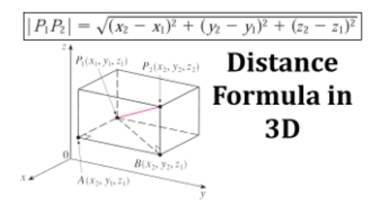

Ex.1: Parsing Protein Structures
1 Parsing PDB files
1.1 Learning Goals
- Get familiar with
PDBformat and quick alternatives to parse this files. - Understand the meaning of protein contact maps and their correlation with protein structure.
1.2 Data
You must parse the following structures from the protein data bank.
1.3 Tasks
Note
Choose your favorite flavor! You are free to complete this exercise using Python or R.
2. Parse the data to extract the protein structural information from the PDB file in tabular format, then compute the pairwise distance matrix for each PDB structure. The distance between two amino acids is usually calculated as the 3D Euclidean distance between their C-alpha (CA) atoms.
